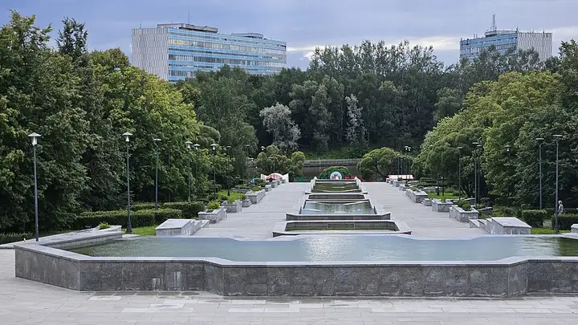

Фото: Sergey A. Demidov, CC BY 4.0 · Wikimedia Commons
Парк · Зеленоград
Парк 40-летия Победы
Главный парк Зеленограда с прудом и прогулочными аллеями.
- ₽ · до 1 500 ₽ на человека
- в 2 планах
Позвать сюда: Парк 40-летия ПобедыОткрыть в каталоге: Парк 40-летия ПобедыМаршрут до места: Парк 40-летия Победы
Адрес и детали
- Адрес
- Зеленоград, Савёлки
Открыть на Яндекс Картах (в новой вкладке) - Станция
- Зеленоград — Крюково (МЦД-3)
- Округ
- Зеленоград
- Цена
- до 1 500 ₽ на человека
- Проверено
- работает — проверили в октябре 2026
Планы с этим местом 2
- Парк 40-летия Победы · Парк · Зеленоград — Крюково (МЦД-3)
- 27 минут пешкомBrunch Time · Кафе завтраков
Утренний круг вокруг пруда в главном парке Зеленограда, а потом Brunch Time, где драники, бенедикты и вафли с солёной карамелью подают весь день.
Открыть план: Зеленоград: пруд и завтрак весь деньПозвать сюда: Зеленоград: пруд и завтрак весь день
Фото: Sergey A. Demidov, CC BY 4.0 · Wikimedia Commons
- Парк 40-летия Победы · Парк · Зеленоград — Крюково (МЦД-3)
- 19 минут пешкомЗеленоградский лесопарк · Лесопарк
Парк с прудом и прогулка по Зеленоградскому лесопарку.
Открыть план: Выходной в ЗеленоградеПозвать сюда: Выходной в Зеленограде
Фото: Sergey A. Demidov, CC BY 4.0 · Wikimedia Commons

Похожие рядом

Что ещё рядом
Как позвать
- Выбери план, место или событие — в карточке адрес, цены и маршрут в Яндекс Картах.
- Нажми «Позвать сюда» — соберётся приглашение-игра для свидания или голосование для компании.
- Отправь ссылку в любой мессенджер: тебе ответят, а компания отметит, куда и когда может. Бесплатно и без регистрации.